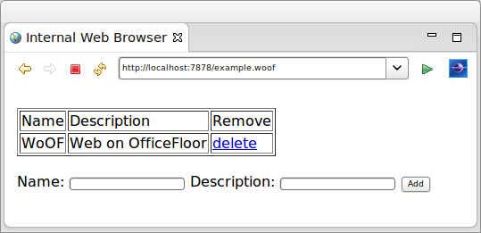

Dependency Injection of Managed Object Tutorial
This tutorial demonstrates the dependency injection of a Connection. The Connection is provided by a ManagedObjectSource implementation (i.e. ConnectionManagedObjectSource).
A ManagedObjectSource enables injection of customised objects. The customised objects have greater access to OfficeFloor/WoOF functionality than plain old java objects (POJOs). OfficeFloor/WoOF, however, supports both as POJOs are simpler to implement.
The example used in this tutorial is the following simple application to manage rows within a database table.

Configuring Objects
Objects for dependency injection are configured as YAML files in the officefloor/objects/ directory on the class path.
Providing these files is optional. It is anticipated that features such as WoOF annotations and SupplierSource implementations will provide the necessary dependencies for running a web application. See the other tutorials for more information. The files are however supported to extend WoOF web applications with additional custom dependencies.
The configuration of the dependency injected Connection is as follows.
managed-object:
source: net.officefloor.jdbc.ConnectionManagedObjectSource
managed-object:
source: net.officefloor.jdbc.DataSourceManagedObjectSource
properties:
datasource.class: org.h2.jdbcx.JdbcDataSource
url: "jdbc:h2:mem:exampleDb;DB_CLOSE_DELAY=-1"
user: sa
The Connection is provided by a ManagedObjectSource implementation that closes the connection on completion of the request. This depends on the DataSource to provide a managed Connection.
Properties to configure the ManagedObjectSource implementations can be provided in the above file or within a properties file.
The contents of configured property file is as follows.
datasource.class = org.h2.jdbcx.JdbcDataSource
url = jdbc:h2:mem:exampleDb;DB_CLOSE_DELAY=-1
user = sa
Objects to be dependency injected within OfficeFloor are made available by ManagedObjectSource implementations. Many dependency injection frameworks are based solely on the object's Class and its necessary dependency injection of other objects. OfficeFloor goes beyond this by providing more capabilities to the object such as invoking processes. For example the socket listener within a stand-alone WoOF HTTP Server is actually a HttpServerSocketManagedObjectSource that invokes an OfficeFloor lightweight process to service the HTTP request.
The ClassManagedObjectSource is available to provide the typical POJO dependency injection.
Dependency Injection
The REST endpoint chains the service function to Thymeleaf for rendering:
getRows:
class: net.officefloor.tutorial.databasehttpserver.Template
method: getRows
next: render
render:
procedure: Thymeleaf
resource: example
The Thymeleaf template renders the rows:
<!DOCTYPE html>
<html>
<body>
<br />
<table border="1">
<tr>
<td>Name</td>
<td>Description</td>
<td>Remove</td>
</tr>
<tr th:each="row : ${model}">
<td th:text="${row.name}">name</td>
<td th:text="${row.description}">description</td>
<td><a th:href="'/deleteRow?id=' + ${row.id}">delete</a></td>
</tr>
</table>
<br />
<form action="/addRow" method="POST">
Name: <input name="name" type="text" />
Description: <input name="description" type="text" />
<input type="submit" value="Add" />
</form>
</body>
</html>
The table data is provided by the following method.
public Row[] getRows(Connection connection) throws SQLException {
// Obtain the row instances
try (PreparedStatement statement = connection.prepareStatement("SELECT * FROM EXAMPLE ORDER BY ID")) {
ResultSet resultSet = statement.executeQuery();
List<Row> rows = new LinkedList<Row>();
while (resultSet.next()) {
rows.add(new Row(resultSet.getInt("ID"), resultSet.getString("NAME"),
resultSet.getString("DESCRIPTION")));
}
// Return the row instances
return rows.toArray(new Row[rows.size()]);
}
}
As the method is matched to the template by name, OfficeFloor uses the method's parameters to identify the necessary dependencies to be injected. In this case the only dependency is the Connection which was configured above.
WoOF auto-wires dependency injection based on type. Auto-wiring dependencies based on type is adequate (and much easier) for the majority of applications. WoOF's underlying OfficeFloor framework does provide manual dependency configuration, however this is seldom used as OfficeFloor allows qualifying dependencies for auto-wiring.
The handling of POST /addRow submission is via the following method.
public void addRow(Row row, Connection connection, ServerHttpConnection http) throws SQLException, IOException {
// Add the row
try (PreparedStatement statement = connection
.prepareStatement("INSERT INTO EXAMPLE (NAME, DESCRIPTION) VALUES ( ?, ? )")) {
statement.setString(1, row.getName());
statement.setString(2, row.getDescription());
statement.executeUpdate();
}
// Redirect back to page (POST/Redirect/GET pattern)
HttpResponse response = http.getResponse();
response.setStatus(HttpStatus.SEE_OTHER);
response.getHeaders().addHeader("location", "/example");
}
The method requires two parameters to be dependency injected. The Connection is dependency injected as above. The Row object below is also dependency injected by its WoOF annotation. See the other tutorials for more details on WoOF annotations.
@HttpParameters
@Data
@AllArgsConstructor
@NoArgsConstructor
public class Row implements Serializable {
private static final long serialVersionUID = 1L;
private int id;
private String name;
private String description;
}
The delete row functionality is similar to the add functionality.
public void deleteRow(@HttpQueryParameter("id") String id, Connection connection, ServerHttpConnection http)
throws SQLException, IOException {
// Obtain the identifier
int rowId = Integer.parseInt(id);
// Delete the row
try (PreparedStatement statement = connection.prepareStatement("DELETE FROM EXAMPLE WHERE ID = ?")) {
statement.setInt(1, rowId);
statement.executeUpdate();
}
// Redirect back to page
HttpResponse response = http.getResponse();
response.setStatus(HttpStatus.SEE_OTHER);
response.getHeaders().addHeader("location", "/example");
}
After the add or delete method is executed the browser is redirected back to GET /example to display the updated table.
Unit Test
The unit test requests the page and then adds a row and deletes a row.
@RegisterExtension
public final MockWoofServerExtension server = new MockWoofServerExtension();
@Test
public void testInteraction(DataSource dataSource) throws Exception {
try (Connection connection = dataSource.getConnection()) {
// Request page
this.server.send(MockWoofServer.mockRequest("/example"));
// Add row (POST/Redirect/GET pattern)
MockWoofResponse response = this.server
.send(MockWoofServer.mockRequest("/addRow?name=Daniel&description=Founder").method(net.officefloor.server.http.HttpMethod.POST));
assertEquals(303, response.getStatus().getStatusCode(), "Should follow POST then GET pattern");
assertEquals("/example", response.getHeader("location").getValue(), "Ensure redirect to load page");
// Ensure row in database
PreparedStatement statement = connection.prepareStatement("SELECT * FROM EXAMPLE WHERE NAME = 'Daniel'");
ResultSet resultSet = statement.executeQuery();
assertTrue(resultSet.next(), "Should find row");
assertEquals("Founder", resultSet.getString("DESCRIPTION"), "Ensure correct row");
// Delete row
this.server.send(MockWoofServer.mockRequest("/deleteRow?id=" + resultSet.getInt("ID")));
// Ensure row is deleted
resultSet = statement.executeQuery();
assertFalse(resultSet.next(), "Row should be deleted");
}
}
Next
The next tutorial covers governing transactions across multiple procedures within a REST flow.